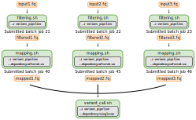

8 Job Dependencies
- Recognise the use of job dependencies to automate complicated analysis pipelines.
- Distinguish when different types of dependency should be used.
- Use the
--dependencyoption to start a job after another job finishes. - Automate the submission of jobs with dependencies.
8.1 What is a job dependency?
A job is said to have a dependency when it only starts based on the status of another job. For example, take this linear pipeline:
script1.sh ----> script2.sh ----> script3.shwhere each script is taking as input the result from the previous script.
We may want to submit all these scripts to SLURM simultaneously, but making sure that script2 only starts after script1 finishes (successfully, without error) and, in turn, script3 only starts after script2 finishes (also successfully).
We can achieve this kind of job dependency using the SLURM option --dependency. There are several types of dependencies that can be used, some common ones being:
| syntax | the job starts after… |
|---|---|
--dependency=after:jobid[:jobid...] |
the specified jobs have started |
--dependency=afterany:jobid[:jobid...] |
the specified jobs terminated (with or without an error) |
--dependency=afternotok:jobid[:jobid...] |
the specified jobs terminated with an error |
--dependency=afterok:jobid[:jobid...] |
the specified jobs terminated successfully (exit code 0) |
--dependency=singleton |
other jobs with the same name and user have ended |
We will give examples of afterok, afternotok and singleton, which are commonly used.

filtering.sh) have no dependencies. The second steps of the pipeline (mapping.sh) each have a dependency from the previous job; in this case the --dependency=afterok:JOBID option is used with sbatch. The final step of the pipeline (variant_call.sh) depends on all the previous steps being completed; in this case the --dependency=singleton is used, which will only start this job when all other jobs with the same name (-J variant_pipeline) complete.Dependencies and Arrays
The job dependency feature can be combined with job arrays to automate the running of parallel jobs as well as launching downstream jobs that depend on the output of other jobs.
8.2 Successful Run: afterok
If we want a job to start after another one has finished successfully, we can use the afterok dependency keyword.
Let’s take a simple example of having two scripts, one that creates a file and another that moves that file. The second script can only run successfully once the previous script has completed:
# first script - creates a file
touch output_task1.txt# second script - moves the file
mv output_task1.txt output_task2.txtTo submit the first script we do:
sbatch task1.shSubmitted batch job 221Now, we can submit the second job as:
sbatch --dependency afterok:221 task2.shThis will ensure that this second job only starts once the first one ends successfully.
A job may depend on the completion of an array of jobs (as covered in job arrays). Because the whole array of jobs has its own job ID, we can use that with the afterok dependency. In that case, our job will start once all the sub-jobs in the array have completed successfully.
8.3 Automating Dependency Submissions
One inconvenience of the --dependency=afterok:JOBID option is that we need to know the job ID before we launch the new job. For a couple of jobs as shown here this is not a big problem. But if we had a chain of several jobs, this would become quite tedious and prone to error.
To overcome this problem, we can create a job submission script that launches sbatch commands, and in the process captures the job numbers to feed into the dependency chain.
Taking the two-step example above, we could write the following job submission script:
# first task of our pipeline
# capture JOBID into a variable
run1_id=$(sbatch --parsable task1.sh)
# second task of our pipeline
# use the previous variable here
sbatch --dependency afterok:${run1_id} task2.shThe trick here is to use the --parsable option to retrieve the job number from the message that sbatch produces. Usually the message looks like “Submitted batch job XXXX”. With the --parsable option, sbatch only outputs the job number itself.
8.4 Unsuccessful Run: afternotok
It may seem strange to have a dependency where we run our job if the previous one failed. However, this can be extremely useful for very long-running jobs that perform checkpoints and thus can resume from the step they stopped at before.
This is particularly useful if you have a maximum time limit enforced by your HPC admins (as it happens at Cambridge). This feature of “checkpoint-and-resume” may not be available in every software, but it is not uncommon for packages that require very long running times. If you’re working with one of these software, check their documentation.
Alternatively, if you are writing your own programs that require very long running times (e.g. a long simulation), consider including a checkpoint procedure, so you can resume the job if it fails.
Let’s consider the example in dependency/notok, where we have a SLURM script called task_with_checkpoints.sh. Let’s say that we were limited to a maximum of 1 minute per job and that our script requires around 2.5 minutes to run (of course these are ridiculously short times, but we’re only using to exemplify its use).
Fortunately, the person that wrote this program implemented a checkpoint system, so that our job resumes from the checkpoint, rather than from the beginning. Therefore, we would like to submit the job 3 times in total, but each time only running the job if the previous job has failed.
This would be our job submission script:
# first submission
run1_id=$(sbatch --parsable task_with_checkpoints.sh)
# second submission in case the first one fails
run2_id=$(sbatch --parsable --dependency afternotok:${run1_id} task_with_checkpoints.sh)
# submit a third time in case the second fails
run3_id=$(sbatch --parsable --dependency afternotok:${run2_id} task_with_checkpoints.sh)
# we could continue submitting more... but we should stop after some timeIn this case, we are always submitting the same script to SLURM, but each time we only run it if the previous iteration failed. Because our script performs checkpoint-and-resume, we can be sure that our task will complete after 3 whole runs.
Sometimes you don’t know how many runs you will need for your job to complete. Hopefully, the software you are using prints some progress information to the log file, so you can check whether the task seems close to finishing or not. If it’s still far from finishing, you can add another afternotok job to the queue, and keep doing this until all your jobs have finished.
8.5 Swarm of Dependencies: singleton
In some cases you may have a job that depends on many previous jobs to have finished. In those cases, you can use an alternative dependency known as singleton. This type of dependency requires you to define a job name for all the jobs on which your singleton depends on.
Let’s consider the example in the dependency/singleton folder. We have task1 and task2, which have no dependencies. However, task3 depends on both of the previous tasks to have completed (it requires both their outputs to generate its own result file).
In this case, we add -J JOB-NAME-OF-YOUR-CHOICE to each of these 3 SLURM scripts. Furthermore, to the tast3.sh script we add --dependency singleton, to indicate that we only want this job to start once all the other jobs with the same name have completed.
Building Complex Pipelines
Although the --dependency feature of SLURM can be very powerful, it can be somewhat restrictive to build very large and complex pipelines using SLURM only. Instead, you may wish to build pipelines using dedicated workflow management software that can work with any type of job scheduler or even just on a single server (like your local computer).
There are several workflow management languages available, with two of the most popular ones being Snakemake and Nextflow. Covering these is out of the scope for this workshop, but both tools have several tutorials and standardised workflows developed by the community.
8.6 Summary
- Job dependencies can be used to sequentially run different steps of a pipeline.
- The
--dependencyfeature of SLURM can be used in different ways:--dependency=afterok:JOBIDstarts a job after a previous job with the specified ID finishes successfully (no error).--dependency=afternotok:JOBIDstarts a job if the specified job failed. This is useful for long-running tasks that have a “checkpoint-and-resume” feature.--dependency=singletonstarts a job after all jobs with the same--job-namecomplete.
- To automate the submission of jobs with dependencies we can:
- Capture the JOBID of a submission into a variable:
JOB1=$(sbatch --parsable job1.sh) - Use that variable to set the dependency for another job:
sbatch --dependency=afterok:$JOB1 job2.sh
- Capture the JOBID of a submission into a variable: